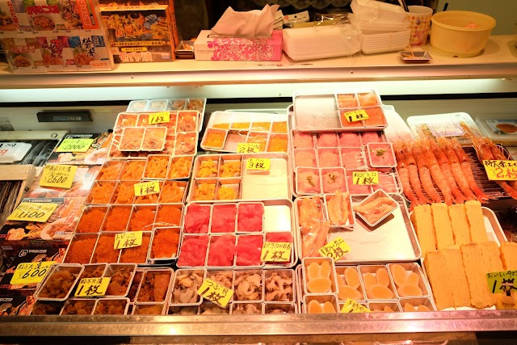
| 営業時間 | 月・水・木・金・土・日 7:00〜16:00 |
|---|---|
| 定休日 | 火曜 |
| 住所 | 青森県青森市古川１丁目１１−１６ |
| 予約 | 要確認 — ☎ 017-777-1367 ／ 公式サイト |
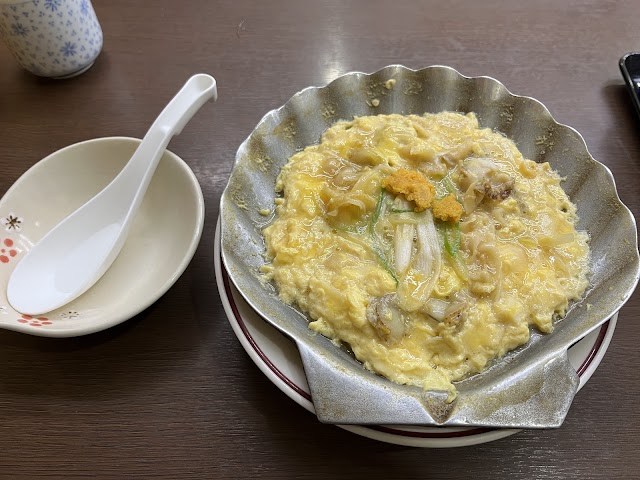
| 営業時間 | 水・木・金・土・日 10:30〜14:00, 16:30〜20:00 |
|---|---|
| 定休日 | 月・火曜 |
| 住所 | 青森県青森市新町１丁目１−１７ 1F |
| 予約 | 要確認 — ☎ 017-722-6834 |
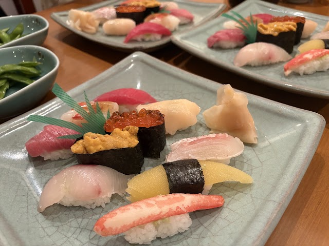
| 営業時間 | 月・火・水・木・金・土・日 11:30〜14:30, 17:00〜21:00 |
|---|---|
| 定休日 | なし(要最終確認) |
| 住所 | 青森県青森市新町１丁目１０−１１ |
| 予約 | 可 — ☎ 017-722-2639 ／ 公式サイト |
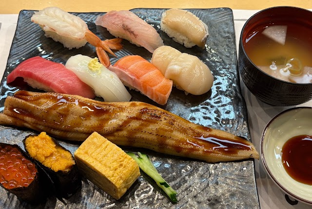
| 営業時間 | 月・火・水・木・金・土・日 11:30〜14:00, 17:00〜21:30 |
|---|---|
| 定休日 | なし(要最終確認) |
| 住所 | 青森県青森市新町１丁目１１−２２ 小林第二ビル |
| 予約 | 可 — ☎ 017-723-5000 ／ 公式サイト |
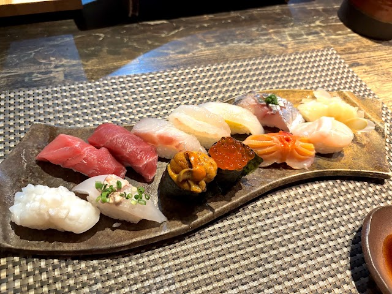
| 営業時間 | 月・火・水・木・金・土 11:30〜14:00, 17:00〜22:00 |
|---|---|
| 定休日 | 日曜 |
| 住所 | 青森県青森市橋本１丁目２−１１ |
| 予約 | 可 — ☎ 017-775-1131 ／ 公式サイト |
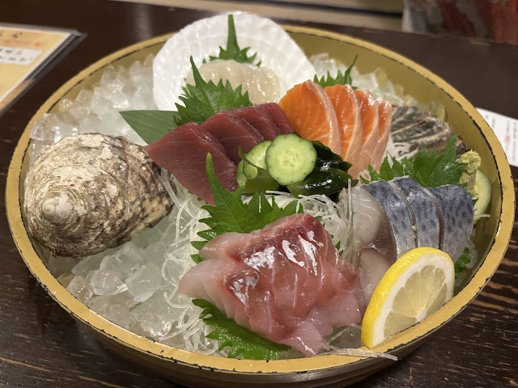
| 営業時間 | 月・火・水・木・金・土・日 16:45〜0:00 |
|---|---|
| 定休日 | なし(要最終確認) |
| 住所 | 青森県青森市本町２丁目５−１４ |
| 予約 | 可 — ☎ 017-722-3443 ／ 公式サイト |
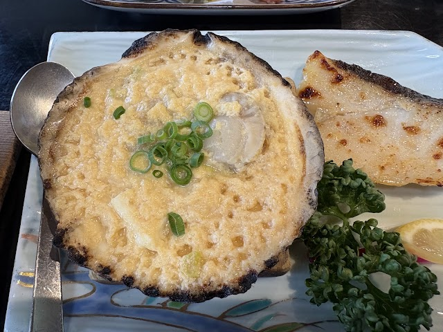
| 営業時間 | 月・火・水・木・金・土・日 11:00〜15:00, 17:00〜20:00 |
|---|---|
| 定休日 | なし(要最終確認) |
| 住所 | 青森県青森市安方１丁目１−４０ アスパム 10F |
| 予約 | 可 — ☎ 017-734-5353 ／ 公式サイト |
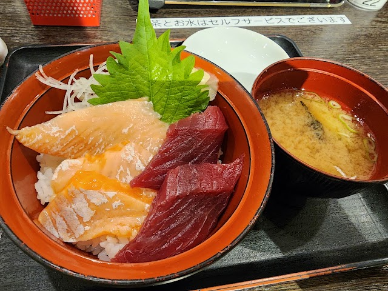
| 営業時間 | 月・火・水・木・金・土・日 11:00〜20:00 |
|---|---|
| 定休日 | なし(要最終確認) |
| 住所 | 青森県青森市石江高間１４０−２ |
| 予約 | 可 — ☎ 017-752-6088 |
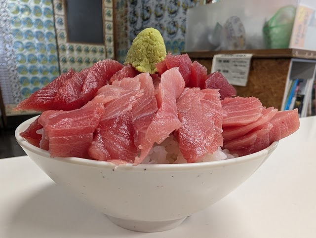
| 営業時間 | 月・火・水・木・金・土・日 11:00〜14:00 |
|---|---|
| 定休日 | なし(要最終確認) |
| 住所 | 青森県青森市浅虫蛍谷２９３−１４ |
| 予約 | 要確認 — ☎ 017-752-3385 ／ 公式サイト |
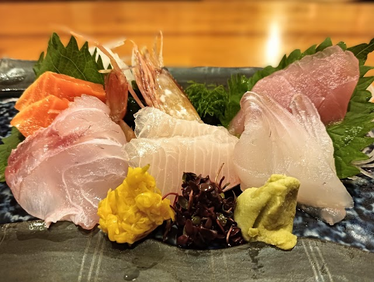
| 営業時間 | 火・水・木・金・土 17:00〜22:00 |
|---|---|
| 定休日 | 月・日曜 |
| 住所 | 青森県青森市安方２丁目７−３３ |
| 予約 | 可 — ☎ 017-735-3314 ／ 公式サイト |
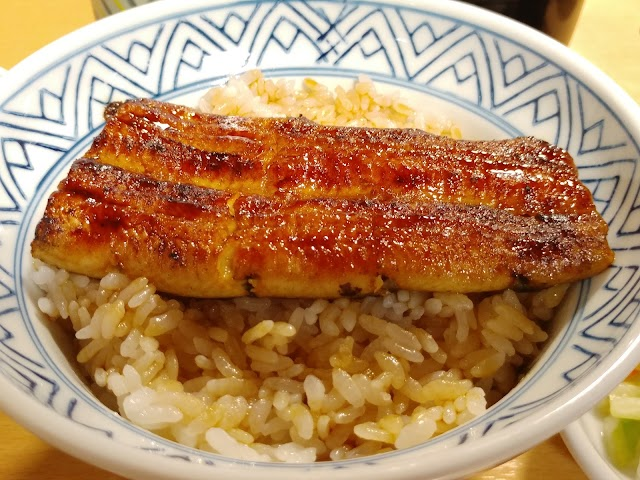
| 営業時間 | 火・水・木・金・土 11:00〜14:00, 16:00〜19:00 |
|---|---|
| 定休日 | 月・日曜 |
| 住所 | 青森県青森市本町３丁目２−４ |
| 予約 | 可 — ☎ 017-776-3480 |
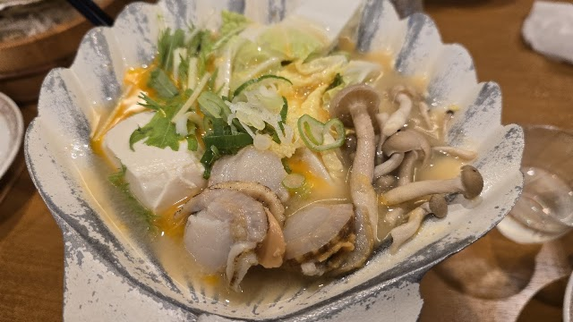
| 営業時間 | 月・火・木・金・土・日 11:30〜14:00, 17:00〜21:30 ／ 水 17:00〜21:30 |
|---|---|
| 定休日 | なし(要最終確認) |
| 住所 | 青森県青森市安方１丁目２−１１ |
| 予約 | 可 — ☎ 017-752-1131 ／ 公式サイト |
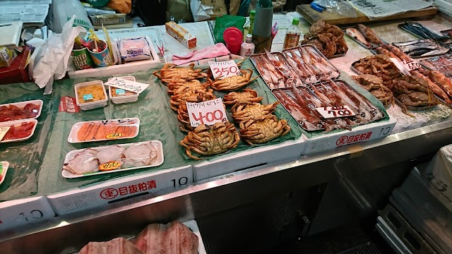
| 営業時間 | 月・火・水・木・金・土・日 5:00〜18:30 |
|---|---|
| 定休日 | なし(要最終確認) |
| 住所 | 青森県青森市新町１丁目３−７ アウガ 地下 1F |
| 予約 | 要確認 — ☎ 017-718-0151 ／ 公式サイト |
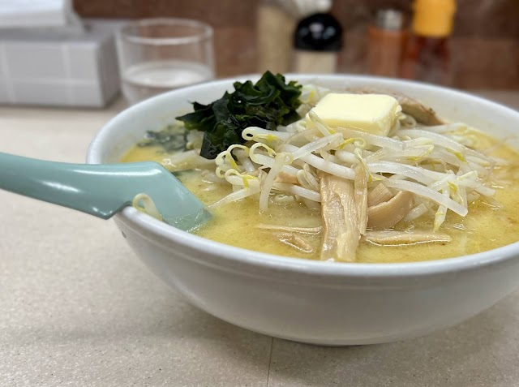
| 営業時間 | 月・火・木・金・土 11:00〜18:00 |
|---|---|
| 定休日 | 水・日曜 |
| 住所 | 青森県青森市古川１丁目１５−６ 大西クリエイトビル １Ｆ |
| 予約 | 要確認 — ☎ 017-723-1036 ／ 公式サイト |
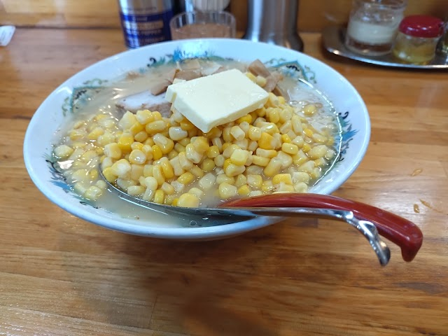
| 営業時間 | 月・火・水・木・金 11:00〜14:45, 17:30〜20:00 ／ 土・日 11:00〜20:00 |
|---|---|
| 定休日 | なし(要最終確認) |
| 住所 | 青森県青森市石江岡部５６−３ |
| 予約 | 要確認 — ☎ 017-782-1765 |
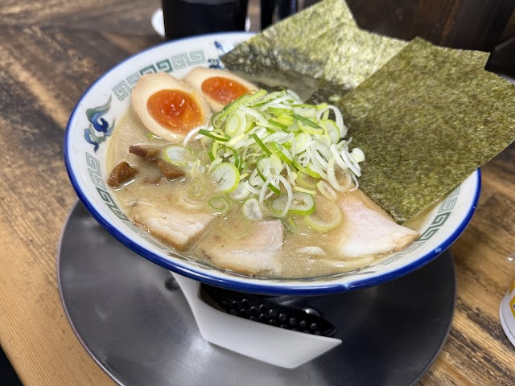
| 営業時間 | 月・火・水・木・金・土・日 7:00〜20:45 |
|---|---|
| 定休日 | なし(要最終確認) |
| 住所 | 青森県青森市柳川１丁目２−３ |
| 予約 | 要確認 — ☎ 017-773-3715 ／ 公式サイト |
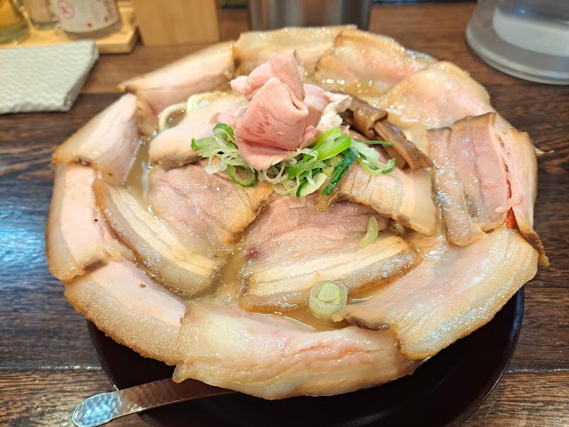
| 営業時間 | 月・水・木・金・土・日 8:00〜16:00 |
|---|---|
| 定休日 | 火曜 |
| 住所 | 青森県青森市新城山田５８８−１６ |
| 予約 | 要確認 — ☎ 017-787-0057 ／ 公式サイト |
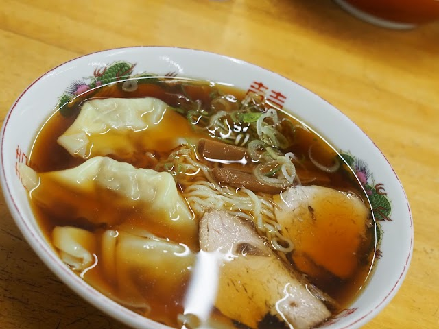
| 営業時間 | 火・水・金・土・日 7:30〜14:00 |
|---|---|
| 定休日 | 月・木曜 |
| 住所 | 青森県青森市新町１丁目１４−１４ |
| 予約 | 要確認 — ☎ 017-722-6905 |
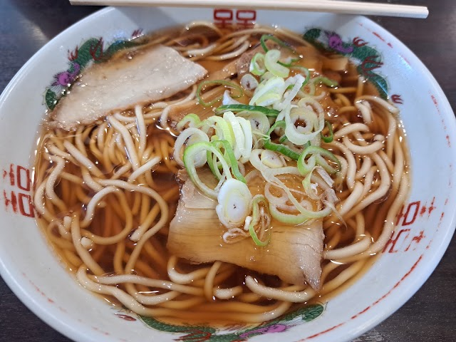
| 営業時間 | 月・火・水・木・金・土 10:00〜18:00 |
|---|---|
| 定休日 | 日曜 |
| 住所 | 青森県青森市安方２丁目２−１６ |
| 予約 | 要確認 — ☎ 017-722-4104 |
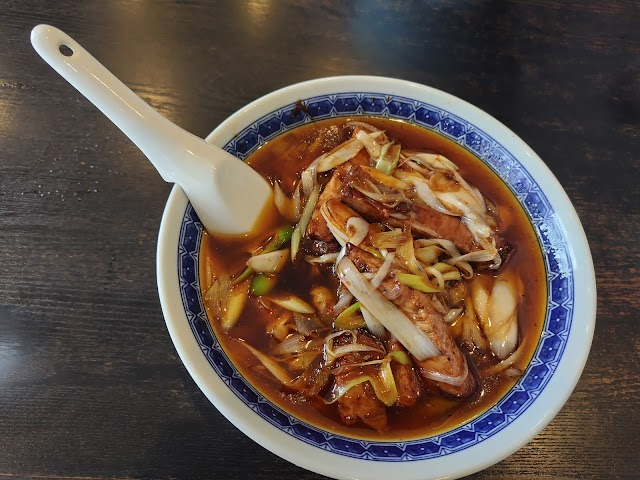
| 営業時間 | 月・水・金 10:30〜14:30 ／ 火・木・土 10:30〜14:30, 17:00〜20:00 |
|---|---|
| 定休日 | 日曜 |
| 住所 | 青森県青森市栄町１丁目６−８ パンション あさり |
| 予約 | 要確認 — ☎ 017-741-2748 |
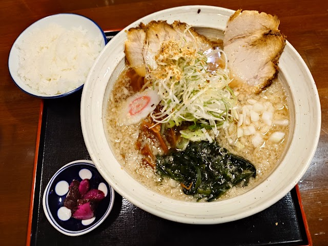
| 営業時間 | 月・火・木・金 11:00〜14:30, 17:30〜18:30 ／ 土・日 11:00〜14:30 |
|---|---|
| 定休日 | 水曜 |
| 住所 | 青森県青森市古川１丁目１０−９−１ |
| 予約 | 要確認 — ☎ 017-721-2690 ／ 公式サイト |
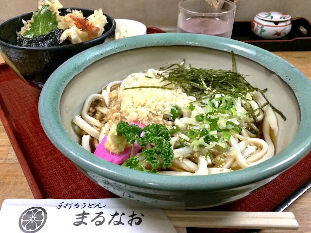
| 営業時間 | 月・火・水・金・土・日 11:00〜14:30 |
|---|---|
| 定休日 | 木曜 |
| 住所 | 青森県青森市西滝２丁目１８−１２ |
| 予約 | 要確認 — ☎ 017-782-8300 |
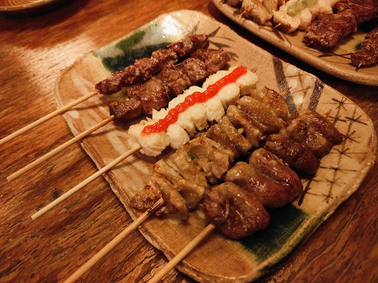
| 営業時間 | 月・火・水・木・金・土 17:30〜23:30 |
|---|---|
| 定休日 | 日曜 |
| 住所 | 青森県青森市古川１丁目１９−６ |
| 予約 | 可 — ☎ 017-777-8520 |
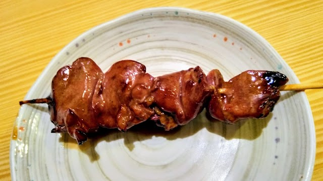
| 営業時間 | 月・火・水・木・金・土 17:30〜0:00 |
|---|---|
| 定休日 | 日曜 |
| 住所 | 青森県青森市安方２丁目１０−８ |
| 予約 | 可 — ☎ 017-775-3315 |
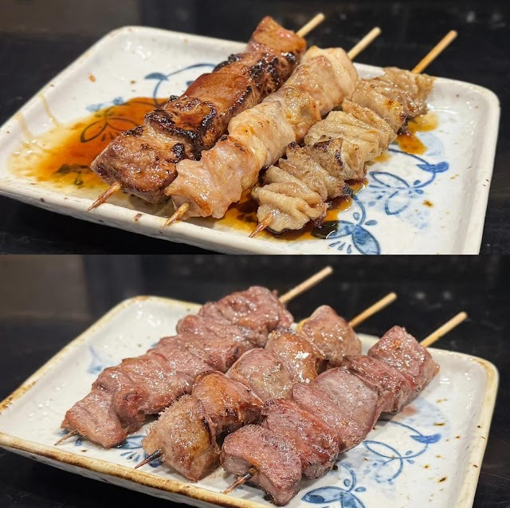
| 営業時間 | 月・火・水・木・金・土 17:00〜22:00 |
|---|---|
| 定休日 | 日曜 |
| 住所 | 青森県青森市安方２丁目３−１７ |
| 予約 | 可 — ☎ 017-777-9001 |
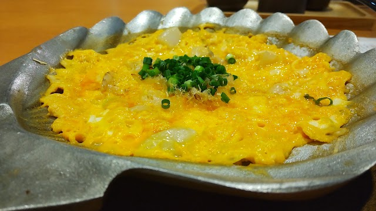
| 営業時間 | 月・火・水・木・金・土 17:30〜23:00 |
|---|---|
| 定休日 | 日曜 |
| 住所 | 青森県青森市本町１丁目１−９ |
| 予約 | 可 — ☎ 017-734-2088 ／ 公式サイト |
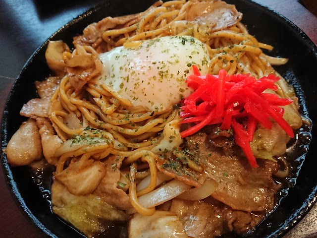
| 営業時間 | 月・火・水・木・日 17:00〜22:00 ／ 金・土 17:00〜0:00 |
|---|---|
| 定休日 | なし(要最終確認) |
| 住所 | 青森県青森市橋本１丁目１−１３ |
| 予約 | 可 — ☎ 050-5340-8205 |
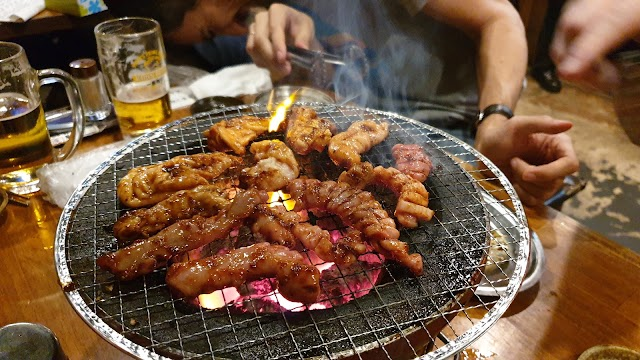
| 営業時間 | 月・火・水・木・金・土・日 17:00〜22:00 |
|---|---|
| 定休日 | なし(要最終確認) |
| 住所 | 青森県青森市新町１丁目９−１９ |
| 予約 | 可 — ☎ 017-752-1535 |
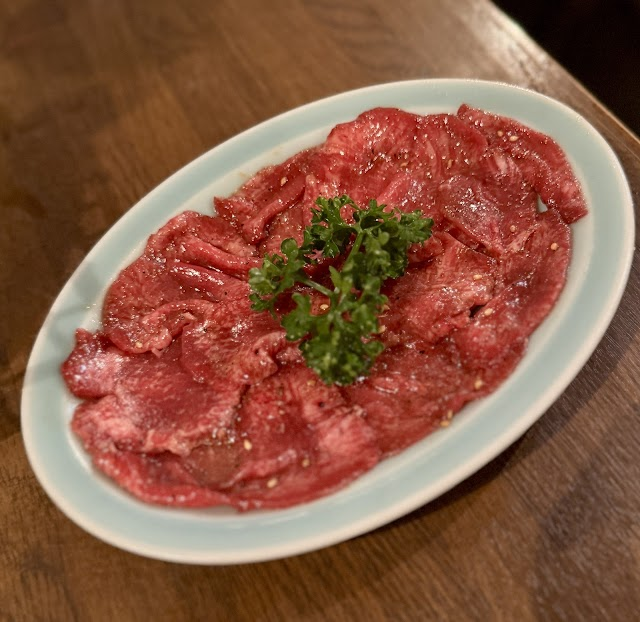
| 営業時間 | 火・水・木・金・土・日 17:00〜23:00 |
|---|---|
| 定休日 | 月曜 |
| 住所 | 青森県青森市堤町２丁目２２−３２ |
| 予約 | 可 — ☎ 017-773-5085 ／ 公式サイト |
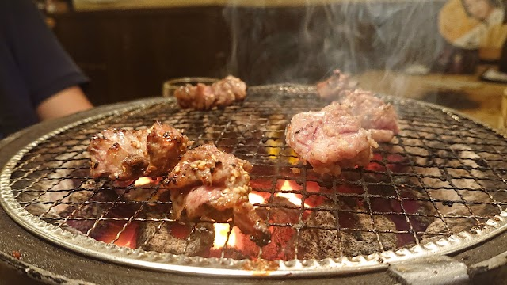
| 営業時間 | 火・水・木・金・土・日 17:00〜23:00 |
|---|---|
| 定休日 | 月曜 |
| 住所 | 青森県青森市本町１丁目２−１ |
| 予約 | 可 — ☎ 017-775-3729 |
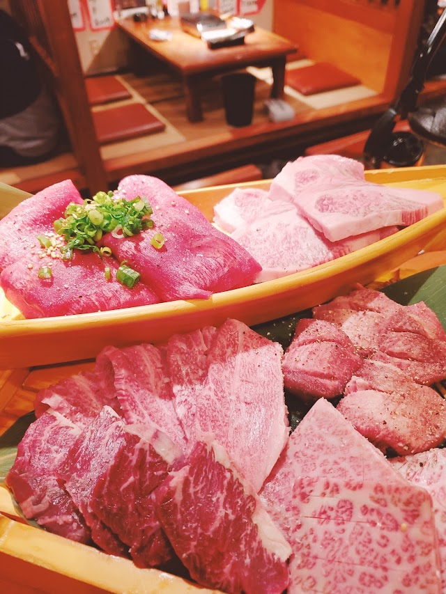
| 営業時間 | 月・水・木・金・土・日 17:00〜0:00 |
|---|---|
| 定休日 | 火曜 |
| 住所 | 青森県青森市本町２丁目５−１３ |
| 予約 | 可 — ☎ 017-777-2992 ／ 公式サイト |
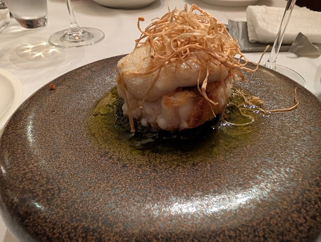
| 営業時間 | 月・火・水・木・金・土 11:30〜14:00, 18:00〜23:00 |
|---|---|
| 定休日 | 日曜 |
| 住所 | 青森県青森市長島２丁目１５−２ |
| 予約 | 可 — ☎ 017-723-5325 ／ 公式サイト |
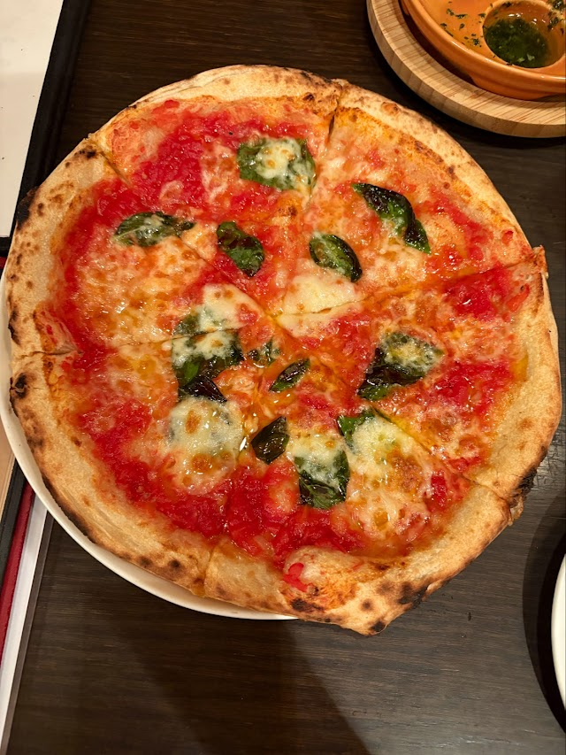
| 営業時間 | 月・火・水・木・金・土・日 17:00〜3:00 |
|---|---|
| 定休日 | なし(要最終確認) |
| 住所 | 青森県青森市本町２丁目３−１５ |
| 予約 | 可 — ☎ 017-777-0104 |
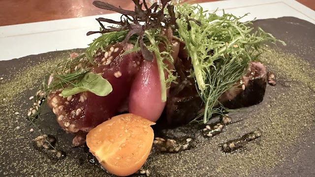
| 営業時間 | 月・火・水・木・金・土 18:00〜22:30 |
|---|---|
| 定休日 | 日曜 |
| 住所 | 青森県青森市本町５丁目３−１ たかみつビル 高光ビル １F |
| 予約 | 可 — ☎ 017-776-2207 ／ 公式サイト |
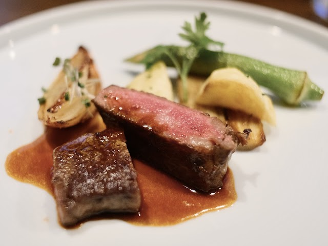
| 営業時間 | 火・水・木・金・土 17:30〜22:00 |
|---|---|
| 定休日 | 月・日曜 |
| 住所 | 青森県青森市橋本１丁目７−１ |
| 予約 | 可 — ☎ 017-723-1546 ／ 公式サイト |
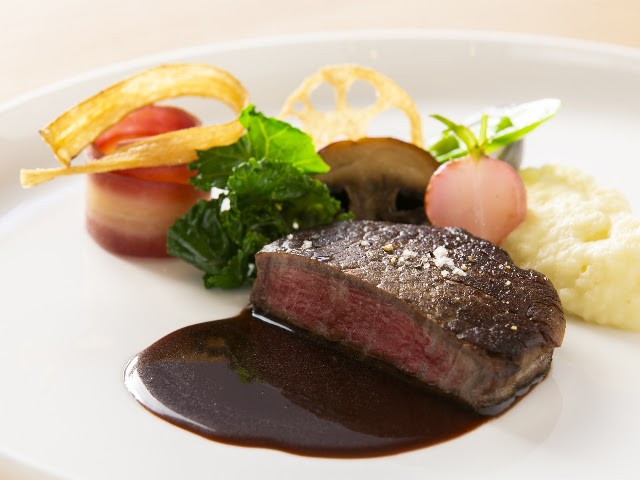
| 営業時間 | 月・火・土・日 12:00〜14:30, 18:00〜22:00 ／ 金 18:00〜22:00 |
|---|---|
| 定休日 | 水・木曜 |
| 住所 | 青森県青森市松森３丁目２０−５２ |
| 予約 | 可 — ☎ 017-764-0331 ／ 公式サイト |
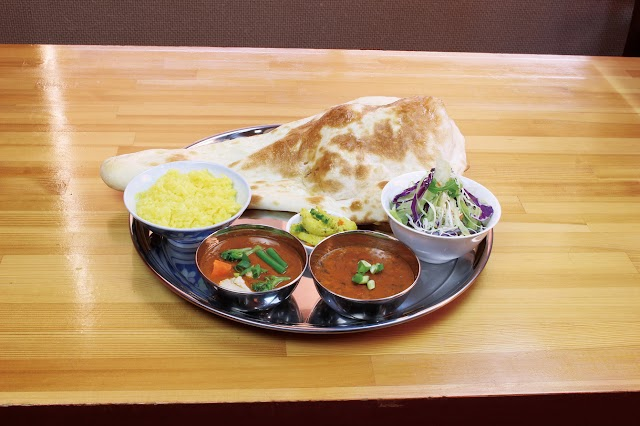
| 営業時間 | 月・火・水・木・金 11:00〜15:00, 17:00〜21:00 ／ 土・日 11:00〜21:00 |
|---|---|
| 定休日 | なし(要最終確認) |
| 住所 | 青森県青森市東造道３丁目３−１ |
| 予約 | 可 — ☎ 017-736-3339 ／ 公式サイト |
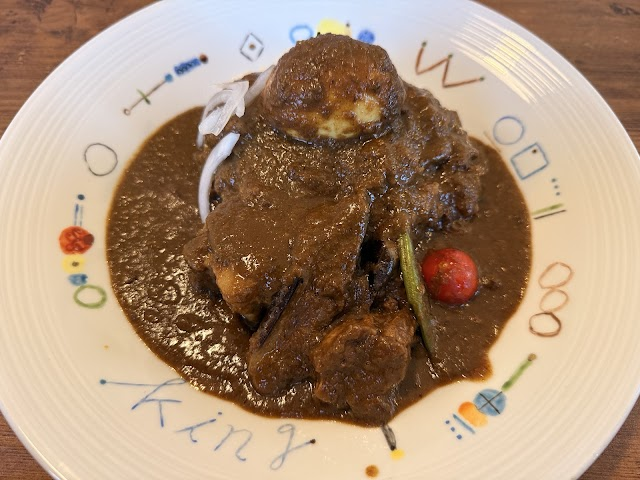
| 営業時間 | 火・水・木・金・土 11:00〜16:00, 17:00〜20:30 ／ 日 11:00〜17:00 |
|---|---|
| 定休日 | 月曜 |
| 住所 | 青森県青森市浪館前田３丁目２７−２７ |
| 予約 | 可 — ☎ 017-718-1227 ／ 公式サイト |
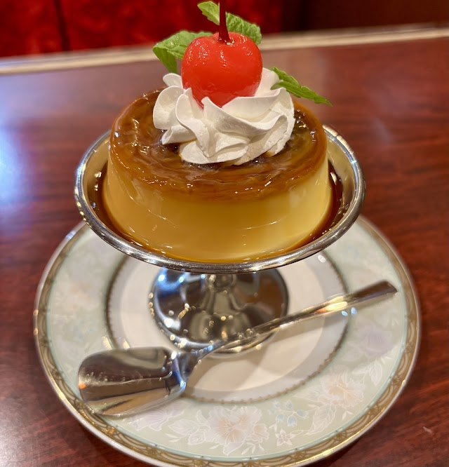
| 営業時間 | 月・火・木・金 8:00〜11:00, 12:00〜16:30 ／ 土・日 9:00〜11:30, 13:00〜16:30 |
|---|---|
| 定休日 | 水曜 |
| 住所 | 青森県青森市新町１丁目１４−１３ 工藤ビル 1階 |
| 予約 | 要確認 — 公式サイト |
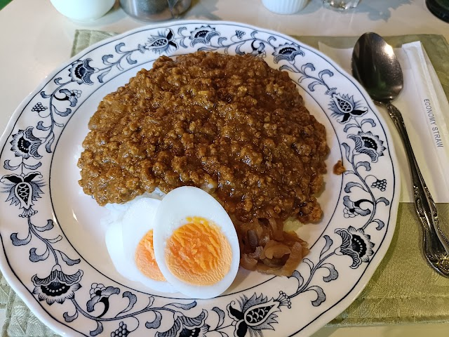
| 営業時間 | 月・火・木・金・土・日 7:00〜17:00 |
|---|---|
| 定休日 | 水曜 |
| 住所 | 青森県青森市安方２丁目６−７ |
| 予約 | 要確認 — ☎ 017-722-4575 ／ 公式サイト |
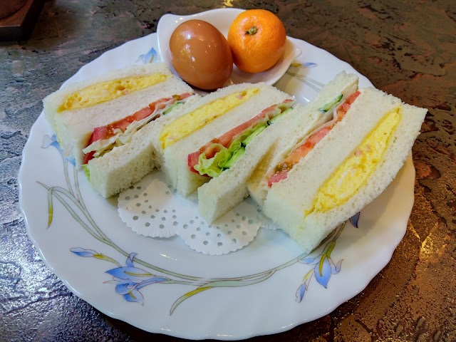
| 営業時間 | 月・火・水・木・金・土・日 9:00〜16:00 |
|---|---|
| 定休日 | なし(要最終確認) |
| 住所 | 青森県青森市新町２丁目８−４ タカヤビル |
| 予約 | 要確認 — ☎ 017-722-7778 |
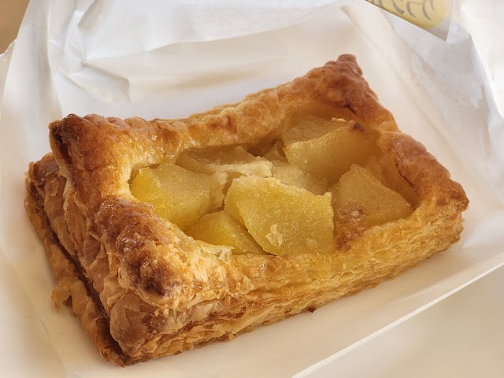
| 営業時間 | 月・水・木・金・土・日 9:30〜18:00 |
|---|---|
| 定休日 | 火曜 |
| 住所 | 青森県青森市新町２丁目６−１５ |
| 予約 | 要確認 — ☎ 017-722-7738 ／ 公式サイト |
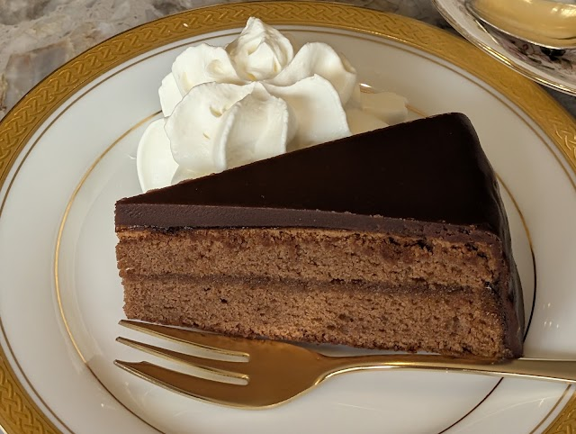
| 営業時間 | 火・水・木・金・土・日 10:30〜17:00 |
|---|---|
| 定休日 | 月曜 |
| 住所 | 青森県青森市新町１丁目１３−２１ |
| 予約 | 要確認 — ☎ 017-722-1661 ／ 公式サイト |
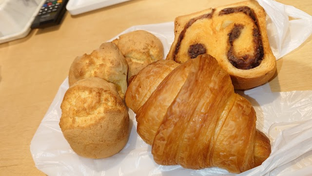
| 営業時間 | 月・火・水・木・金・土・日 7:00〜16:00 |
|---|---|
| 定休日 | なし(要最終確認) |
| 住所 | 青森県青森市新町１丁目３−３５ |
| 予約 | 要確認 — ☎ 017-763-5200 ／ 公式サイト |
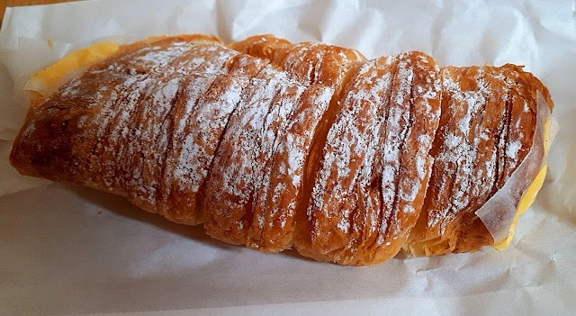
| 営業時間 | 月・火・木・金・土・日 10:00〜19:00 |
|---|---|
| 定休日 | 水曜 |
| 住所 | 青森県青森市安方１丁目１０−７ |
| 予約 | 要確認 — ☎ 017-757-8989 ／ 公式サイト |
本ガイドは個人利用目的で作成。掲載情報は2026年8月時点の調査に基づく。写真出典: Google Maps投稿写真(©各投稿者/Google)。